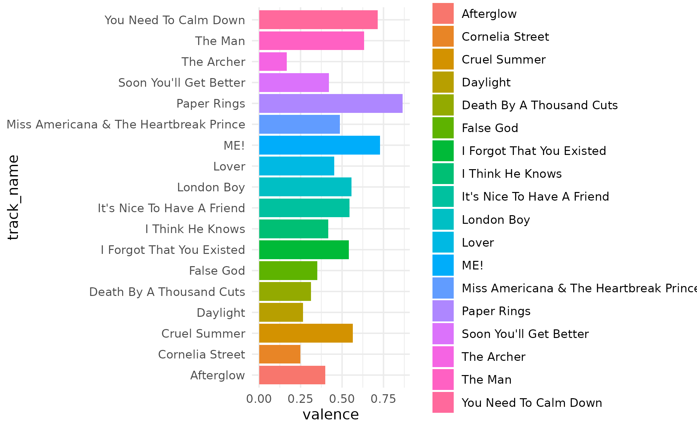
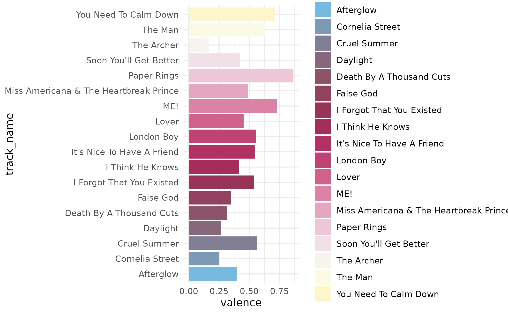
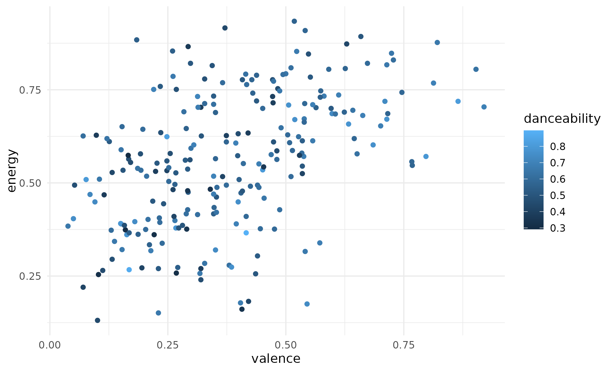
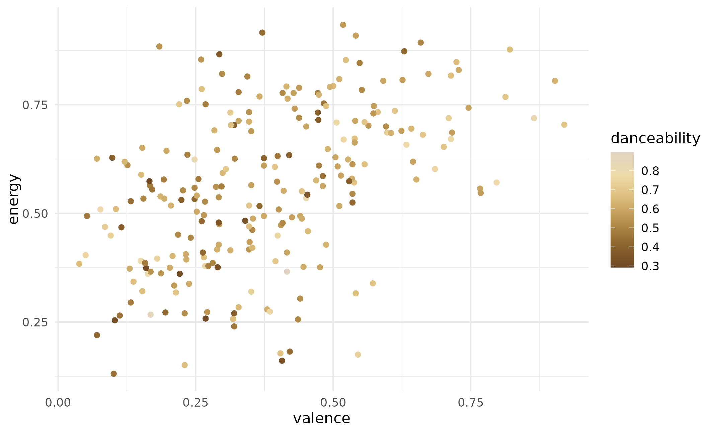
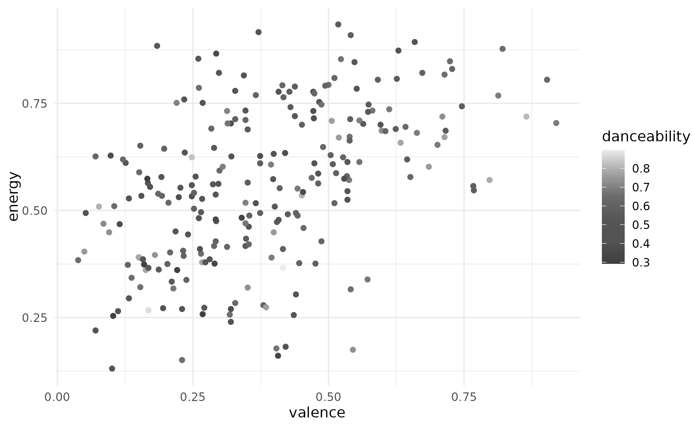

Taylor Swift colour scales based on album cover palettes
Source:R/ggplot2-color-scales.R
scale_taylor.RdTaylor Swift colour scales based on album cover palettes
scale_colour_taylor_d( ..., alpha = 1, begin = 0, end = 1, direction = 1, album = "Lover", aesthetics = "colour" ) scale_color_taylor_d( ..., alpha = 1, begin = 0, end = 1, direction = 1, album = "Lover", aesthetics = "colour" ) scale_fill_taylor_d( ..., alpha = 1, begin = 0, end = 1, direction = 1, album = "Lover", aesthetics = "fill" ) scale_colour_taylor_c( ..., alpha = 1, begin = 0, end = 1, direction = 1, album = "Lover", values = NULL, space = "Lab", na.value = "grey50", guide = "colourbar", aesthetics = "colour" ) scale_color_taylor_c( ..., alpha = 1, begin = 0, end = 1, direction = 1, album = "Lover", values = NULL, space = "Lab", na.value = "grey50", guide = "colourbar", aesthetics = "colour" ) scale_fill_taylor_c( ..., alpha = 1, begin = 0, end = 1, direction = 1, album = "Lover", values = NULL, space = "Lab", na.value = "grey50", guide = "colourbar", aesthetics = "fill" ) scale_colour_taylor_b( ..., alpha = 1, begin = 0, end = 1, direction = 1, album = "Lover", values = NULL, space = "Lab", na.value = "grey50", guide = "coloursteps", aesthetics = "colour" ) scale_color_taylor_b( ..., alpha = 1, begin = 0, end = 1, direction = 1, album = "Lover", values = NULL, space = "Lab", na.value = "grey50", guide = "coloursteps", aesthetics = "colour" ) scale_fill_taylor_b( ..., alpha = 1, begin = 0, end = 1, direction = 1, album = "Lover", values = NULL, space = "Lab", na.value = "grey50", guide = "coloursteps", aesthetics = "fill" )
Arguments
| ... | Other arguments passed on to |
|---|---|
| alpha | The alpha transparency, a number in [0,1], see argument alpha in
|
| begin | The (corrected) hue in [0,1] at which the viridis colormap begins. |
| end | The (corrected) hue in [0,1] at which the viridis colormap ends. |
| direction | Sets the order of colors in the scale. If 1, the default, colors are ordered from darkest to lightest. If -1, the order of colors is reversed. |
| album | A character string indicating the album that should be used for the palette. |
| aesthetics | Character string or vector of character strings listing the
name(s) of the aesthetic(s) that this scale works with. This can be useful,
for example, to apply colour settings to the |
| values | if colours should not be evenly positioned along the gradient
this vector gives the position (between 0 and 1) for each colour in the
|
| space | colour space in which to calculate gradient. Must be "Lab" - other values are deprecated. |
| na.value | Missing values will be replaced with this value. |
| guide | A function used to create a guide or its name. See
|
Value
A color scale for use in plots created with ggplot2::ggplot().
Examples
# use taylor_d with discrete data library(ggplot2) (p <- ggplot(taylor_album_songs, aes(x = valence, y = energy)) + geom_point(aes(color = mode_name), size = 2) + theme_bw())p + scale_color_taylor_d()# change scale label p + scale_fill_taylor_d("Mode of Track")# select album palette to use, see ?taylor::album_palettes for more details lover <- subset(taylor_album_songs, album_name == "Lover") (p <- ggplot(lover, aes(x = valence, y = track_name)) + geom_col(aes(fill = track_name)) + theme_minimal())p + scale_fill_taylor_d(album = "Lover")p + scale_fill_taylor_d(album = "evermore")# use taylor_c with continuous data (p <- ggplot(taylor_album_songs, aes(valence, energy)) + geom_point(aes(color = danceability)) + theme_minimal())p + scale_color_taylor_c(album = "Fearless")p + scale_color_taylor_c(album = "folklore")